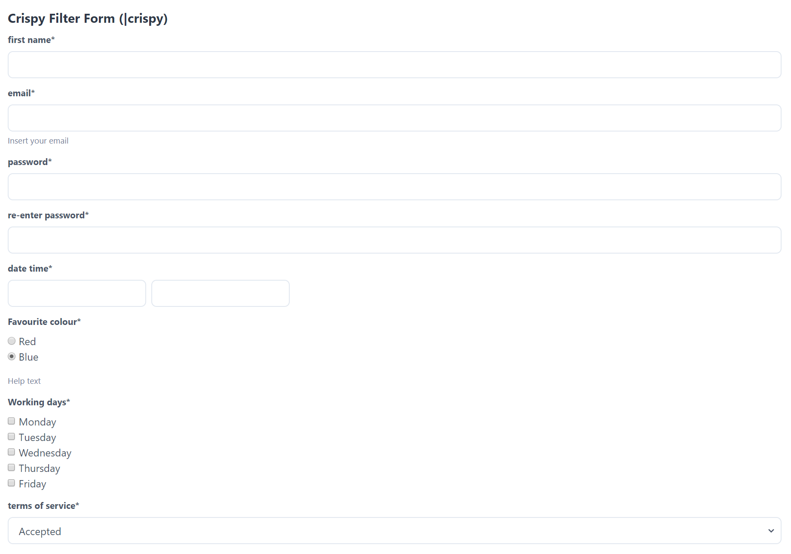

Getting Started
Installation
Install via pip.
pip install crispy-tailwind
You will need to update your project’s settings file to add crispy_forms
and crispy_tailwind to your project’s INSTALLED_APPS setting. Also set
tailwind as an allowed template pack and as the default template pack for
your project:
INSTALLED_APPS = (
...
"crispy_forms",
"crispy_tailwind",
...
)
CRISPY_ALLOWED_TEMPLATE_PACKS = "tailwind"
CRISPY_TEMPLATE_PACK = "tailwind"
If you use Tailwind CLI, you have to provide the path to your templates. Since this package contains templates which are within your Pythons site-packages, it’s hard to tell Tailwind where these templates live.
Thanks to Carlton Gibson’s blog, you can implement (aka copy & paste) a Django management command and the corresponding Tailwind configuration:
Usage
There are a number of ways you can use crispy-tailwind. The method
requiring the least amount of effort involves using the |crispy filter.
This will add an opinionated Tailwind style to your form. If you require more
control, you can use the crispy tags and utilise the full power of the
crispy-forms through its FormHelper and Layout capabilities.
|crispy filter
The |crispy filter is the method requiring the least amount of effort to
add Tailwind style to your form. It avoids the complexity of FormHelper,
and it comes with an opinionated form style.
Load the
tailwind_filtersin your template:{% load tailwind_filters %}
Apply the
|crispyfilter to your form:{{ form|crispy }}
Here are two examples. The first shows the default rendering. The second shows rendering of server-side errors:
{kind=link}

Crispy-addon
There is a template tag called crispy-addon. It can be used to render a
single field (including label) with prepended and appended text:
{% load tailwind_field %}
{% crispy_addon form.my_field prepend="$" append=".00" %}
You can also prepend or append like so:
{% crispy_addon form.my_field prepend="$" %}
{% crispy_addon form.my_field append=".00" %}